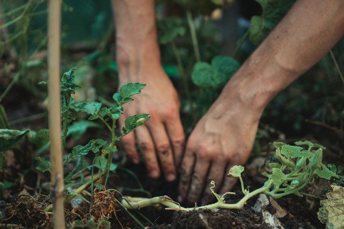
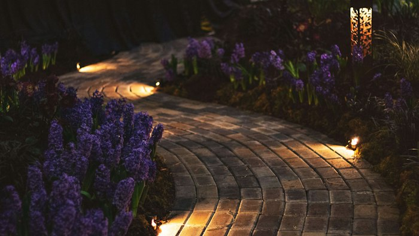
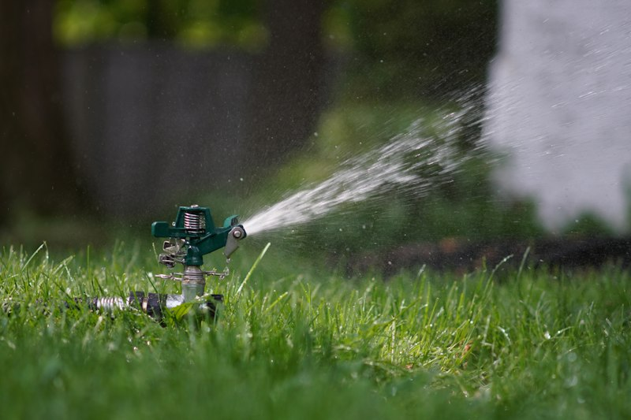
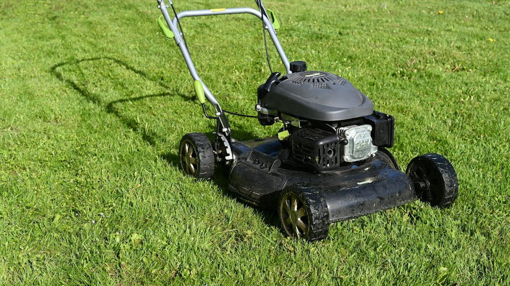
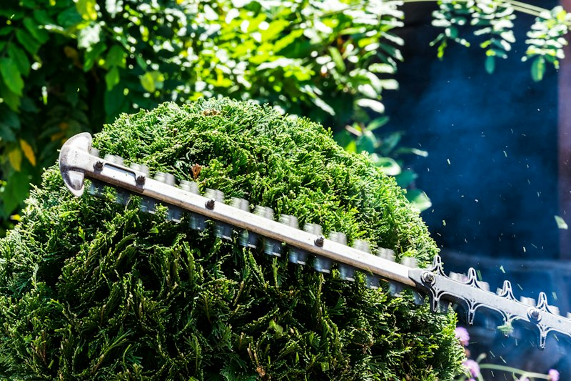
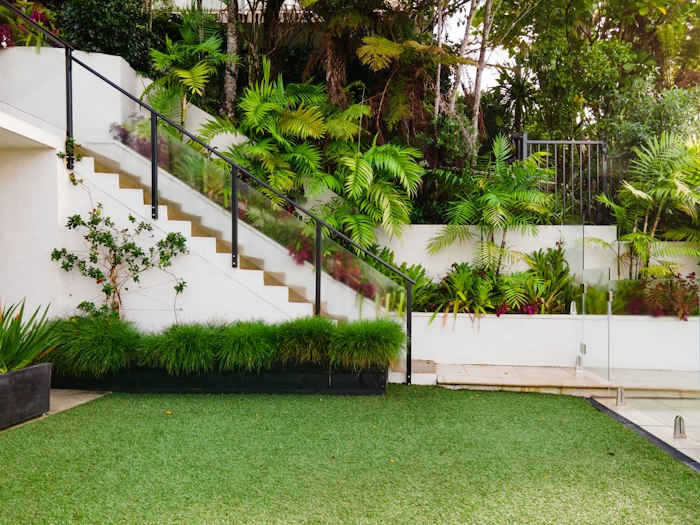
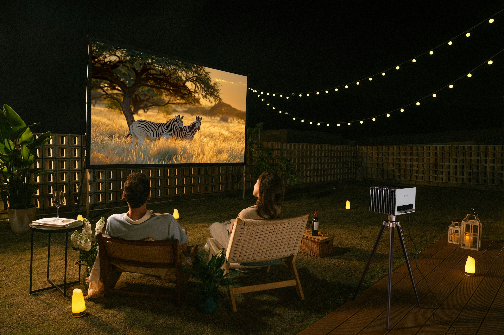

Transforme seu espaço
Com a natureza ao seu lado.
Jardinagem com qualidade, cuidado e experiência para deixar seu ambiente mais bonito, saudável e acolhedor.
-

Plantio
e paisagismo -

Instalação
de jardins -

Sistema de
irrigação -

Manutenção
de gramados -

Poda e
paisagismo -
Plantas e
decoração verde -

Jardins
personalizados
-
0
Jardins criados
-
0
Anos de experiência
-
0
Clientes satisfeitos
-
0
Manutenções realizadas
Nossos serviços
Soluções completas para o seu jardim.
Do cuidado diário ao projeto completo, oferecemos serviços especializados para cada necessidade.
O próximo passo · Seu jardim
Todo jardim pode ficar bonito. O seu merece florescer o ano inteiro. Agende
Planos de manutenção
Escolha o plano ideal para o seu jardim.
Escolha o plano ideal para manter seu jardim sempre bonito, saudável e bem cuidado.
-
Plano Avulso
Visita única, conforme a necessidade
Ideal para quem precisa de cuidados pontuais no jardim, sem compromisso com manutenções periódicas.
0%de desconto
Orçamento personalizado, sem desconto.
- Atendimento conforme a necessidade do cliente
- Manutenção personalizada
- Sem compromisso de continuidade
-
Plano Mensal
1 visita por mês
Ideal para quem deseja manter o jardim saudável e organizado com cuidados regulares.
0%de descontona mão de obra
Orçamento personalizado com 10% de desconto.
- Acompanhamento periódico do jardim
- Cuidados preventivos com as plantas
- Manutenção programada
- 10% de desconto na mão de obra
-
Maior desconto
Plano Quinzenal
2 visitas por mês
Ideal para quem deseja um jardim sempre bem cuidado, com atenção frequente e manutenção contínua.
0%de descontona mão de obra
Orçamento personalizado com 15% de desconto.
- Acompanhamento mais frequente do jardim
- Maior controle do crescimento das plantas e ervas daninhas
- Cuidados preventivos contínuos
- Jardim com aparência bem cuidada por mais tempo
- 15% de desconto na mão de obra
Serviços de manutenção
Todos os planos podem contemplar corte de grama, podas, controle de ervas daninhas, limpeza de canteiros, adubação e cuidados gerais com o jardim, conforme a necessidade e o orçamento aprovado.
Observação: os descontos são aplicados sobre a mão de obra. Materiais e serviços adicionais são cobrados separadamente.
